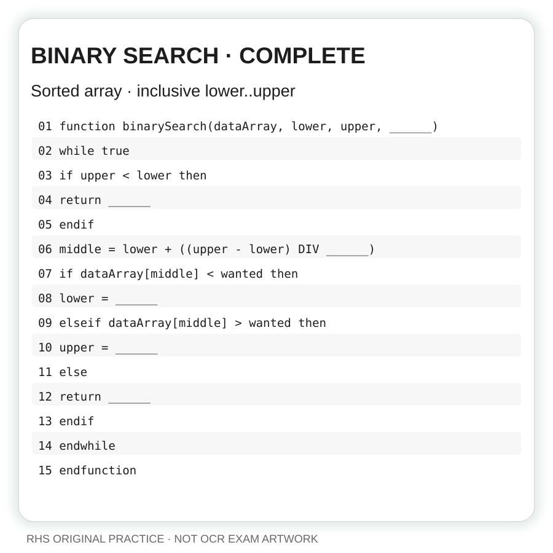
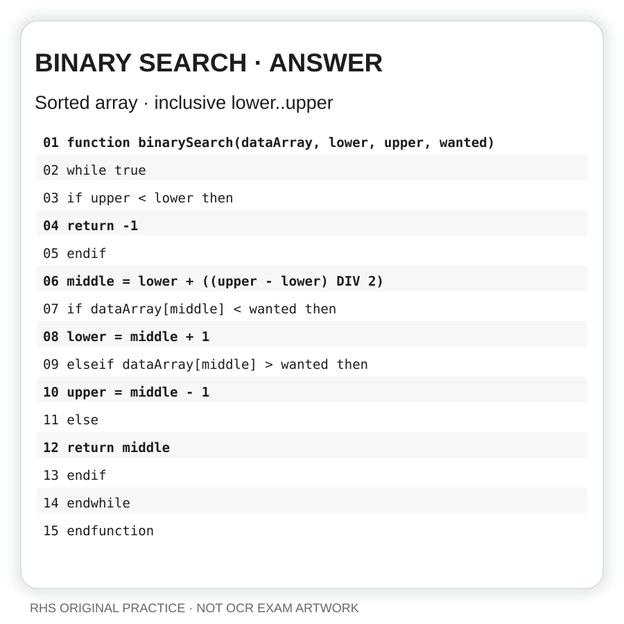
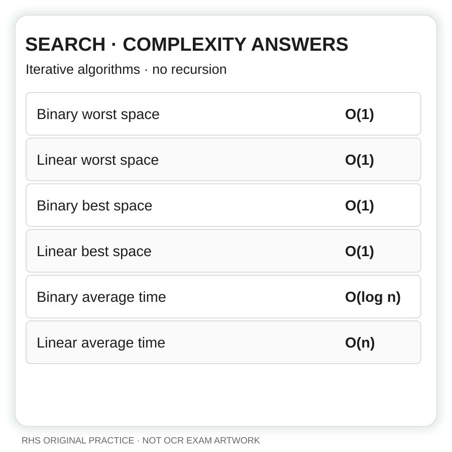

QUESTION 1 OF 3
Q1(d) · Breadth-first traversal · 6 marks
Starting at K, give the complete breadth-first visit order, taking left siblings before right siblings.
Answer · review
K, C, R, A, F, N, U, E, H, S, W. One marking point for each grouped level/branch pair, pending source moderation.

QUESTION 2 OF 3
Q2(a)(i) · Iterative binary search · 6 marks
Fill the six missing expressions in the sorted-array binarySearch function. Its lower and upper bounds are inclusive.
Answer · review
wanted; -1; 2; middle + 1; middle - 1; middle. One mark per correct blank.


QUESTION 3 OF 3
Q2(b) · Search complexity · 6 marks
Fill six Big-O values for iterative binary and linear search, using O(1), O(log n), or O(n).
Answer · review
Four auxiliary space values: O(1). Binary average time: O(log n). Linear average time: O(n).
